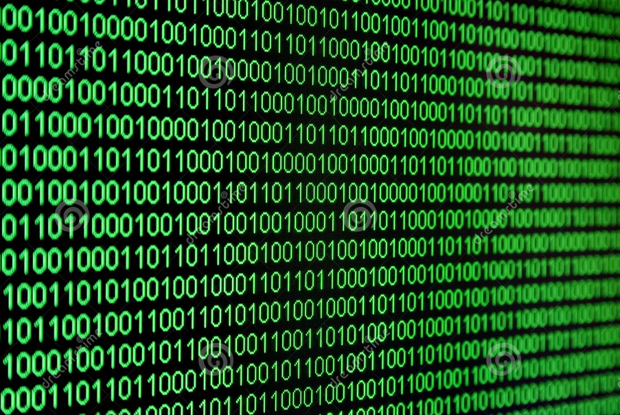

Binair stelsel
Wat is het binair stelsel precies?
Het binaire stelsel is een soort getallensysteem met alleen de getallen 0 en 1.
Door het getallen systeem kunnen bijna alle digitalen apparaten werken!
Ieder cijfer in het ¨getalsysteem¨ wordt een bit genoemd, dit is de aller kleinste informatie wat in een computer zit opgeslagen.

Hoe werk je met het binair stelsel?
In het stelsel begin je altijd bij het nummer 1, en kan ieder getal 2 keer zo groot worden als het getal daarvoor.
Een voorbeeld hiervan is: Een twee is twee enen, drie is dan weer twee enen met een nul en vier is twee nullen met een één.
Deze codes worden gebruikt zodat een computer of een ander apparaat, kan lezen welke instructies hij moet doen of volbrengen.
Hieronder is een afbeelding die gaat naar de asciitabel op een andere webiste.

Wat is een bit precies?
Het woord ¨bit¨ is de afkoring van het woord ¨binair teken¨ of in het Engels ¨binary digit¨.
Een bit is het kleinste deeltje informatie in het binaire stelsel, die natuurlijke de waarde 0 of 1 heeft.
Simpel gezegd, bits zijn eigenlijk de bouwstenen van de digitalen data in bijvoorbeeld computers of telefoons.
Bijna elk apparaat werkt met een binaire code dus er zullen altijd bits in je telefoon zitten.
Wat is een byte?
1 byte is opgebouwd uit infomratie van acht bits. 1 byte vertegenwoordigd één letter of cijfer.
Er zijn meerdere verschillende vormen van bytes, een paar voorbeelden hiervan zijn: Kilobyte (KB),Megabyte (MB),Gigabyte (GB).
Ook bytes zijn een bouwstenen voor een computer, zodat de informatie goed opgeslagen en verwerkt kan worden.
Doordat 1 byte uit 8 bits bestaat zijn er 256 mogelijke combinaties van nullen en enen mogelijk.